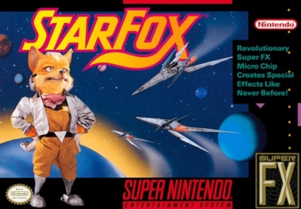

Shooter · 1993
Star Fox
A chip in the cartridge put polygons on a 16-bit console.

Cover: Wikipedia: Star Fox (1993 video game)
Facts
- Released
- 1993-02-21
- Genre
- Rail Shooter
- Category
- Shooter
- Platforms
- Nintendo
- Developers
- Argonaut Games, Nintendo Entertainment Analysis & Development
- Publishers
- Nintendo